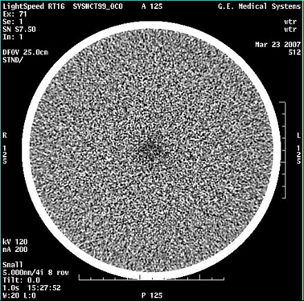
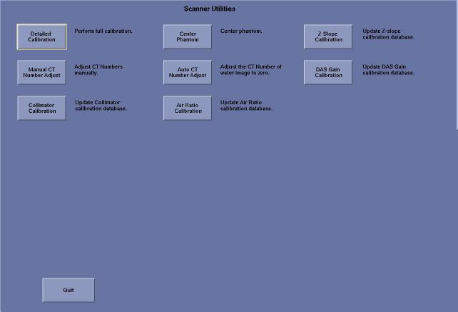

Proprietary to General Electric
Direction 5196839-800, Rev# 6
RT16 and Xtra Service Info Adv
Proprietary to General Electric |
This module describes the phenomenon and cause of smudge-like artifacts in some LightSpeed RT16 and Xtra systems, the design changes made to reduce the artifacts and service procedure changes.
Section 2 Feature/Problem Description
Section 3 System and Service Procedure Changes
Section 3.1 System Changes
Section 3.2 Service Procedure Changes
Section 4 Center Smudge Identification
If smudge-like artifacts appears, you can perform procedures directly in Section 4.
In some LightSpeed RT16 and Xtra systems with Hercules tube, the QA phantom images acquired at tube “cold” state sometimes show center smudge-like artifacts (see image in Illustration 1.) The degree of center smudge is directly related to tube thermal x-drift from “hot” when air calibration is done vs. “cold” when the phantom is scanned.
Illustration 1: Smudge-like Artifacts

RT16 and Xtra system is more sensitive to the tube x-drift due to its unique gantry geometry. For RT16 and Xtra widebore geometry, the detector is shifted farther away from the ISO to keep the magnification factor the same as the regular 16-slice system. Therefore, the tube focal spot is no longer at the center of the detector curvature To reduce the smudge-like artifact, the most important measure is to reduce the focal spot x-drift between “hot” and “cold” thermal states. For most LightSpeed scanners, the calibration is usually done at tube “hot” state after multiple tube warmup protocols are executed. So the aircal vectors are created when tube is relatively “hot” compared to normal scanning condition. Therefore, it is very critical that all clinical sites perform tube warmup after certain period of cooling time (~1.5 to 3 hrs) to minimize the tube focal spot drift between the calibration and when the patient is scanned, to maximally reduce the smudge artifacts. However, in practice, some hospitals often skip the tube warmup even though the system displays a warning message when the tube is cold after several hours idle time. Poor image quality with artifacts like center smudge is the direct result of skipping the cold tube warm-up.
For RT16 and Xtra systems, to ensure good image quality, an air ratio cal is added in cal procedure and Daily Prep. The air ratio cal vector is used to generate air gain ratios of different tube temperature points to reference air cal points during patient scan. Such air ratio is used to compensate the air gain variation caused by cold tube temperature. Hence the center smudge will be reduced.
Air ratio cal in Scan Utilities
A new function of “air ratio cal” is added in Scan Utilities, it must be done after collimator cal and before detail cal. (see image in Illustration 2) This function is used to update the air ratio cal vector, which is used to compensate the air gain variation caused by tube focal drift.
Illustration 2: Air ratio cal in Scan Utilities

The air ratio cal must be begun with cold tube temperature. After collimator cal, the system should not do x-ray exposure to make to the tube cool down to 160°C. The longest waiting time is 2hours 45 minutes.
FastCal scan set change
The air ratio cal, which is a kind of compensation to air cal, is also required in customer site. It must be updated within 5 weeks. Otherwise small focal spot will be limited to use. Only large focal spot is available for patient scan.
The air ratio cal in customer site will use the same button of FastCal. If the air ratio cal vector wasn’t updated after 4 weeks, when the user press FastCal button in Daily Prep, the user can choose normal FastCal or this SPECIAL FastCal by a pop up attention message.
Request SPECIAL FastCal after 4 weeks
After 4 weeks air ratio cal vector updated, the warning message to remind user to do SPECIAL FastCal now or within this 5th week popes. At the same time, it also reminds user small focal spot will be forbidden to use if this SPECIAL FastCal isn’t done within this 5th week.
Request SPECIAL FastCal after 5 weeks if it isn’t performed during the 5th week
If the air ratio cal isn’t updated with 5 weeks, the small focal spot will be forbidden to use. The system will remind user to do SPECIAL FastCal right now to release the limitation of small focal spot.
User Interface Changes
There are UIF changes to reflect the design changes described above include adding new function in Scan Utilities, adding warning messages or modifying current one.
New messages pop up
All the message boxes are designed not to pop up under the UIF of “New Patient”. If the user wants to do Special Fast cal and wait for tube cool down, the warm-up message every 3 hours should be ignored.
The air ratio cal should be done before detail cal and after collimator cal. After collimator cal, the user must wait for mostly 2hours 45minutes without any x-ray exposure to let tube cool down. Totally it takes 3hours 15minutes to complete this cal, including waiting time.
Add Air Ratio Cal in calibration process. This includes new system installation, software loading, tube replacement and detector replacement, and any component change which requires detailed calibration in the service manual.
Deleted old solution procedures which may require mandatory tube cooling or tube replacement.
The modules related with Air Ratio Cal in this Service Methods document have already been modified to meet the 2 requirements above. Follow the procedures in the modified modules to service LightSpeed RT16 and Xtra system.
Please Refer to Center Smudge Check for detail procedure of defining Center Smudge specification.